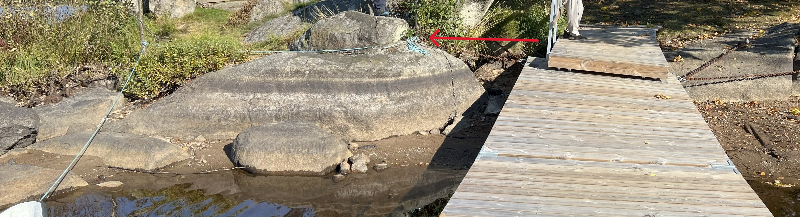
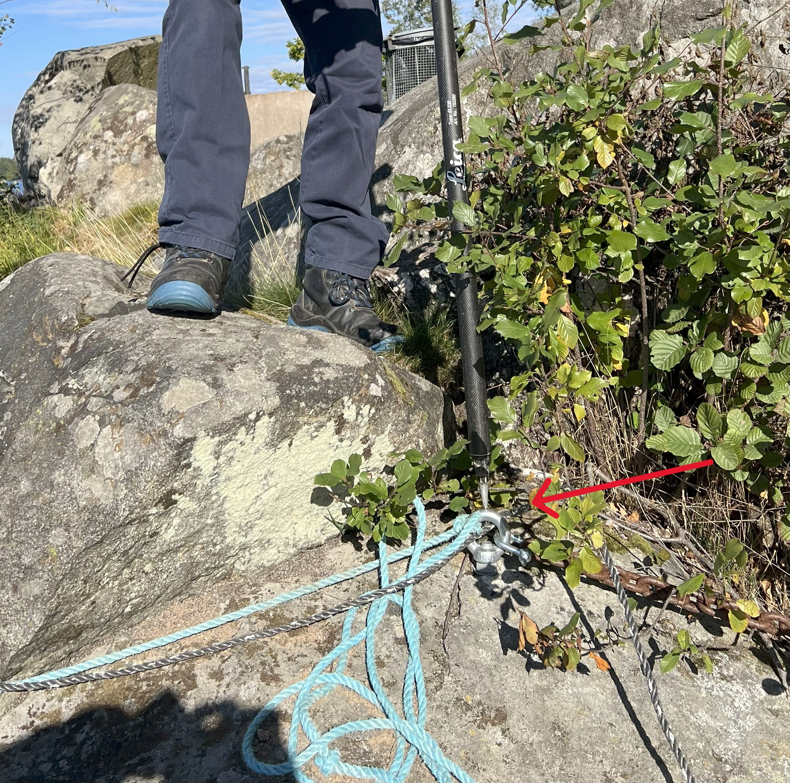
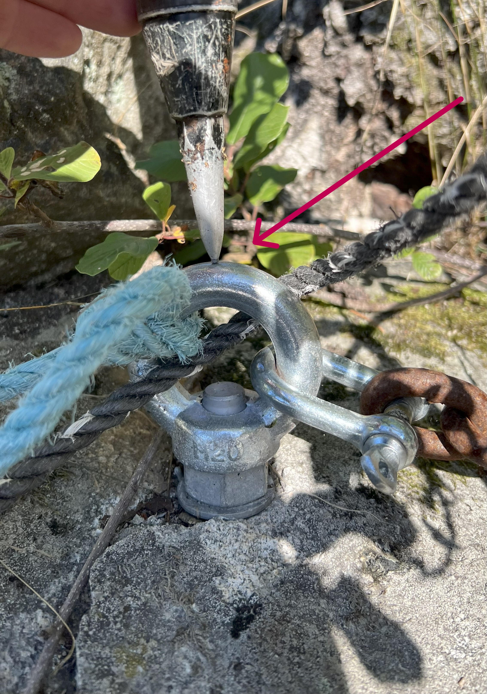
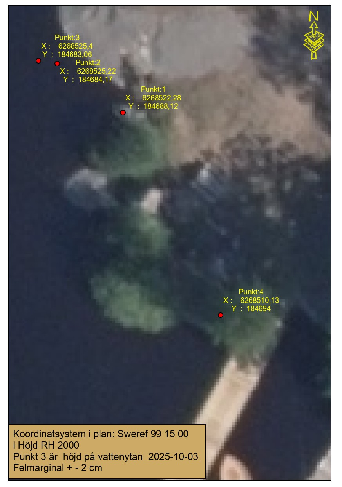
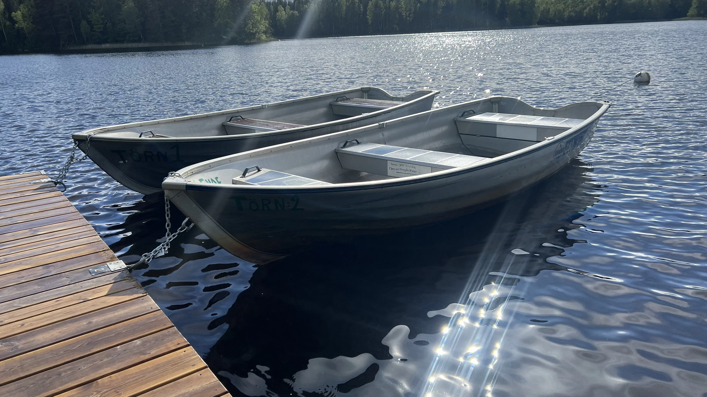
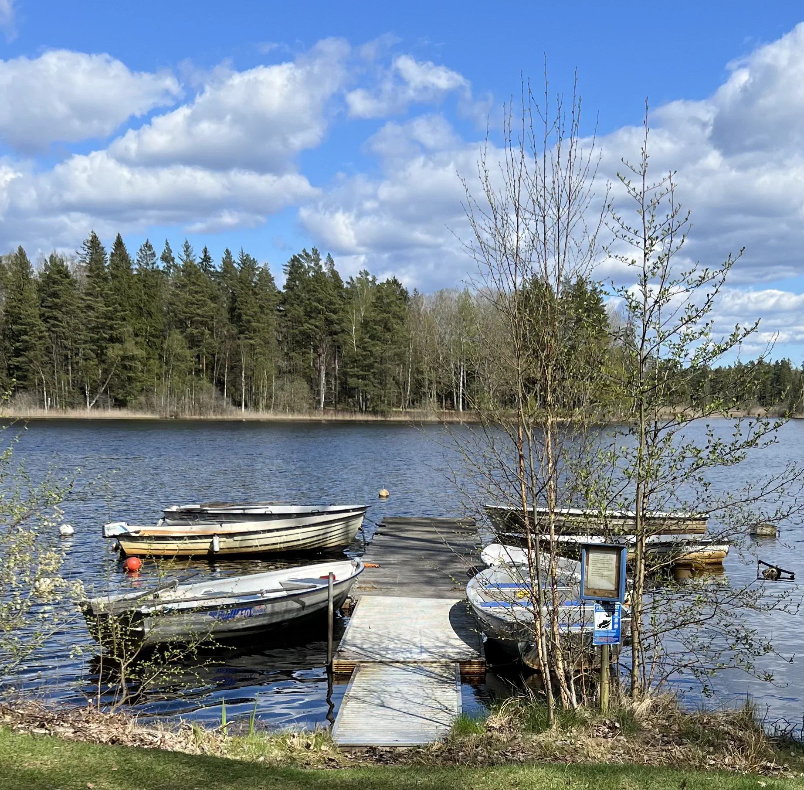
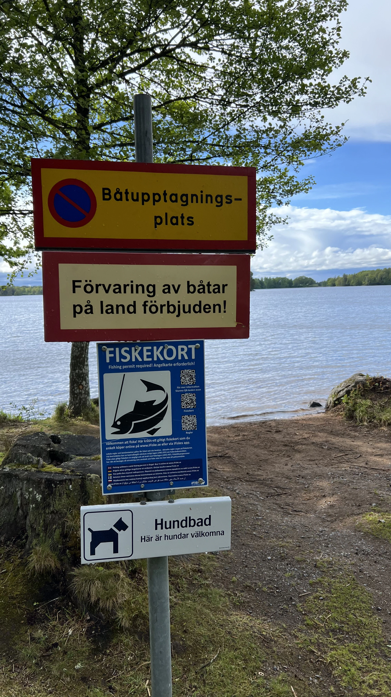
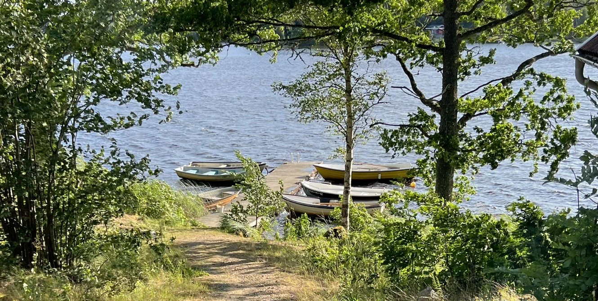
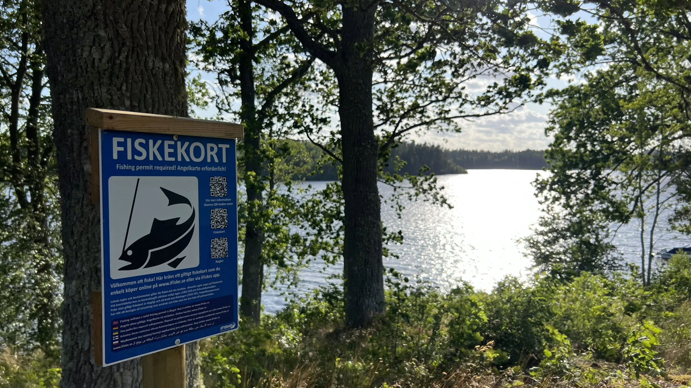
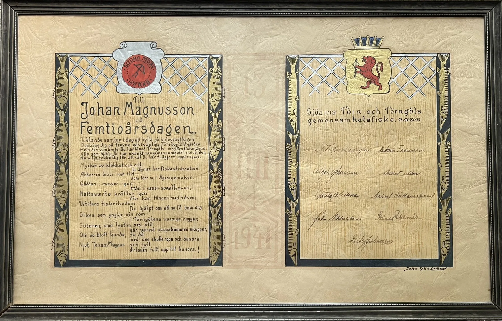

Frågor om fiskekort: fiskekort@tornfvof.se
Återbetalning fiskekort: ifiskerefund@tornfvof.se
Fritt fiske för barn och ungdomar till och med en ålder av 17 år. Målsman måste ha tagit del av och godkänt gällande fiskeregler och föreskrifter.






Cirka sex av tio fiskar som fångas i sportfiske sätts tillbaka i vattnet genom Catch & Release.
Avgörande för hur fisken klarar sig är att den hanteras rätt vid fångsten.
Fiskekonsult Carl-Johan Månsson på CJ Natur har sammanställt en lista med råd för ett lyckat återsläppsfiske.

Båtuthyrning görs dag eller halvdag samma dag, sköts av Vissefjärda samhällsförening, vissefjarda.com/vissefjarda-camping
Vissefjärda samhällsförening hyr även ut båtplatser i Törestorp.

Båtar hyrs också ut av Ödevata FiskecCamp..
Föreningen hyr ut Båtplatser i Ekensbergs naturreservat. 16 platser. Årsavgift 400 kr. Båtarna ska vara förtöjda med boj.

En båtupptagningsplats finns i sjöns södra del,

Vissefjärda hembygsförening hyr även ut båtplatser vid Törsbogården.

Aktuella specificerade priser på denna hemsidan är reserverade för att ändras och ses endast som information till allmänheten. Senast uppdaterad: 2025-07-06.

Ordförande: ordforande@tornfvof.se
Sekreterare: sekreterare@tornfvof.se
Kassör: kassor@tornfvof.se
Aktivitetsansvarig: aktivitet@tornfvof.se
Valberedning: valberedning@tornfvof.se
Webbansvarig: web@tornfvof.se
Törn och Törngöls gemensamhetsfiske bildades 1935. Med alla sanolikhet var det första i sitt slag i Sverige. Efter lagen fiskevårdsområden trädde i kraft 1960 ombildades gemensamhetsfisket till Törn och Törngöls FVOF 1962. Källa: Törn - en sjö i Småland 1981.



1977 skrevs boken